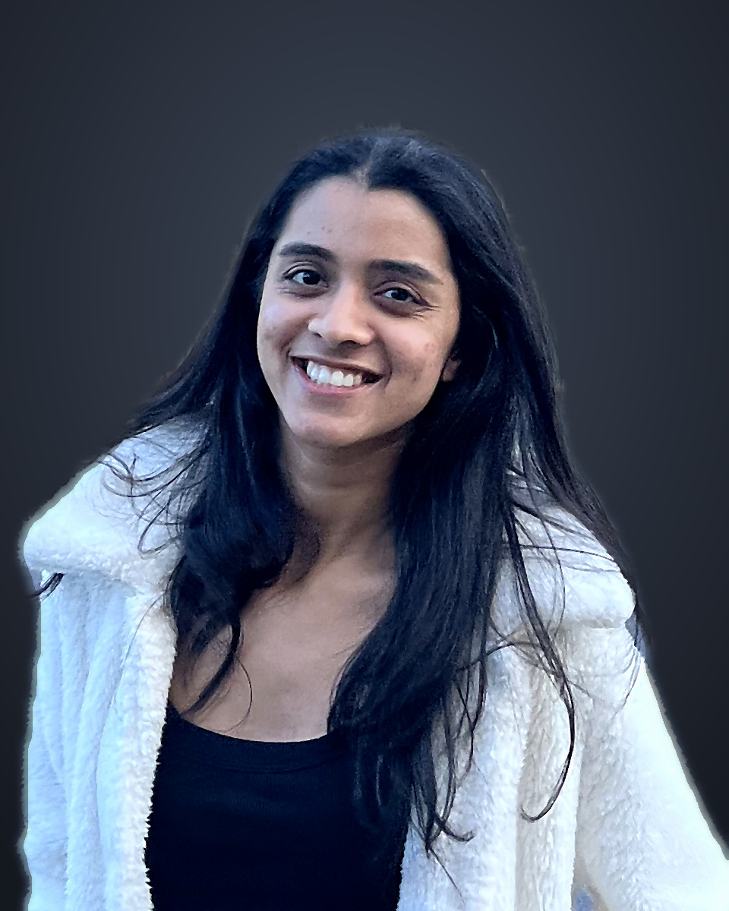

01 about
Code that moves data.
Numbers people can trust.
I'm a data analyst with an MPS in Analytics (Applied Machine Intelligence) from Northeastern University and a B.Com in Business, Finance & Economics. I'm equally at home in SQL, Python, and a spreadsheet model.
At a financial analytics firm, I learned that the most valuable analysis is the one people can trust. So I reconcile every figure to source, build automated checks into my pipelines, and automate the manual steps where errors usually creep in.
Since then I've built a cloud REST API, a Spark data pipeline, healthcare benchmarking on 160K+ records, and market-risk and forecasting models, all on GitHub with tests and documentation.
Outside work: certified Kathak dancer.

02 experience
Where I've shipped.
Real stakeholders, real data, and results someone acted on.
Business & Data Analyst
Jul 2023 – Jun 2024FinEdge Analytics Pvt. Ltd. · Financial analytics firm · Mumbai, India · Part-time
- Automated month-end reconciliation and recurring reporting with Excel VBA and Power Query, cutting 4+ hours to under 15 minutes per cycle.
- Built SQL validation rules and reconciliations across 5+ source systems and 1M+ rows, catching errors before they reached leadership and raising reporting accuracy 30%.
- Built and owned 15+ KPI dashboards in Power BI, Tableau, QuickSight and Excel for finance, operations and leadership.
- Led root cause analysis on pricing and cost anomalies and presented fixes to leadership; several were approved and implemented.
Analytics Consultant, Master's Capstone
2025 – 2026Set2Close (B2B RevOps consultancy) · External client project · Northeastern University
- With a 5-person team, analyzed the client's real CRM data across the full funnel: conversion, speed-to-stage and cohorts.
- Showed the core problem was churn after the sale, not lead generation, and built a lead-scoring model and dashboards leadership used in planning.
- Presented 5 recommendations to the client's leadership, including clear stage-handoff rules and a customer success function.
03 projects
Selected work.
Real and public datasets, tested code, and automated data checks in every project. Each one opens its full README on GitHub.
Hospital Quality API
Cloud-native REST service for 5,419 hospitals, with data structures built from scratch: a trie for search, an O(1) LRU cache and heap-based top-k rankings. Fault tolerant with retries and a circuit breaker.
Healthcare Data Integration Pipeline
Loads six public healthcare datasets (about 800K rows) into HDFS and maps five different source layouts into one standard schema with config-driven PySpark.
Hospital Quality Benchmarking
Reproducible SQL and Python pipeline on CMS data (162,860 records) with a star schema and data dictionary, benchmarking 55 Massachusetts hospitals against 3,107 US peers.
Pricing, Cost & Vendor Margin Analysis
Snowflake SQL and pandas pipeline that splits a gross profit change into volume/mix, price and cost effects, with like-for-like vendor unit costs.
Airline Merger Fare Impact Study
Built a 4,006-route, 24-quarter panel from U.S. DOT data and estimated a merger's effect with difference-in-differences and an event study.
Bond Portfolio Market Risk
Python risk engine for a $100M bond portfolio priced off live Treasury curves and corporate spreads: DV01, CS01, VaR, Expected Shortfall, backtesting and 12 stress scenarios.
Budget vs. Actual & Rolling Forecast
Live-formula model for a $48M-revenue distributor: department budget, monthly and YTD variance flags, rolling 9+3 forecast and P&L to EBITDA.
Churn Prediction Microservice
Trained a machine learning model and deployed it behind a validated REST API that returns real-time churn predictions.
04 toolkit
The stack, by the job it does.
Tools I've used in shipped work and public projects, not just coursework.
Languages & Analysis
Querying, cleaning and modeling data, then testing whether the result holds.
Data Engineering & Cloud
Pipelines and services that run reliably and check their own data.
BI & Reporting
Dashboards and reports that leaders actually open.
Quantitative Modeling
Turning numbers into forecasts, scenarios and risk measures.
05 education
Foundation.
Northeastern University
MPS, Analytics · Applied Machine Intelligence
GPA 3.5 · Leaders Scholars Award (2024) · Database Design, AI for Decision Making, Probability & Statistics, Data Visualization
Mithibai College
B.Com, Business, Finance & Economics
The finance foundation behind my modeling work: accounting, corporate finance and economics.
06 contact
Have data that needs answers?
I'd love to hear about the problem you're working on. The fastest way to reach me is email or LinkedIn.
kshamau16@gmail.com